Demonstration Study (Stratified)
demonstration-stratified.RmdThe two directions start from different biological selections. Taxon-centered analysis focuses on 27 project-related genera. Function-centered analysis targets 23 project-related KOs and keeps all genus contributors in the filtered dataset. The genus list is not applied to the function-centered analysis.
Choose the taxonomic resolution
Choose a taxonomic rank that suits your biological question and is represented in your taxonomy. MicroFun supports Phylum, Class, Order, Family, Genus and Species. This demonstration uses Genus, the most detailed rank available in these data, because Species annotations are unassigned.
Set rank before preparing the inputs. If you change it,
rerun the preparation and both analyses. The 27-genus selection applies
only when rank = "Genus". At other ranks, the code below
uses all assigned taxa unless you replace selected_taxa
with a selection appropriate to that rank. Keep ps at its
original ASV resolution. MicroFun aggregates contributions to the chosen
rank internally, while the original ASV identifiers connect the
contribution table, taxonomy and phylogenetic tree.
1. Prepare the data and project selections
Download and assemble the inputs following Study data and downloads, then run the preparation below.
library(MicroFun)
library(phyloseq)
stopifnot(requireNamespace("vegan", quietly = TRUE),
getNamespaceVersion("vegan") == package_version("2.7.2"))
data_dir <- normalizePath("MicroFun_demonstration_data_filtered", mustWork = TRUE)
source(file.path(data_dir, "assemble-data.R"), local = new.env(), chdir = TRUE)
study <- new.env()
load(file.path(data_dir, "phyloseq_asv.RData"), envir = study)
ps <- prune_samples(sample_data(study$ps)$Cohort == "MDA", study$ps)
ps <- prune_taxa(taxa_sums(ps) > 0, ps)
rank <- "Genus"
group_col <- "group"
reference <- "STS"
target <- "LTS"
chosen_method <- "Maaslin2"
strat_path <- file.path(data_dir, "stratified", "KO_contrib.tsv.gz")
out <- paste0("MicroFun_study_figures_", rank)
dir.create(out, recursive = TRUE, showWarnings = FALSE)
keep_genera <- c(
"Saccharopolyspora", "Collinsella", "Pseudoxanthomonas", "Streptomyces",
"Shouchella", "Flavobacterium", "Pseudomonas", "Cloacibacterium",
"Pedobacter", "Dyadobacter", "Mycovorax", "Devosia",
"Schlegelella", "Cellulomonas", "Brachybacterium", "Thermobispora",
"Geobacillus", "Brevibacillus", "Mammaliicoccus", "Weissella",
"Bacteroides", "Faecalibacterium", "Tyzzerella", "Veillonella",
"Thomasclavelia", "Streptococcus", "Lactobacillus"
)
keep_kos <- c(
"K01489", "K00761", "K00453", "K01609",
"K00074", "K00027", "K00797", "K00812",
"K00681", "K01738", "K01491", "K11754",
"K01808", "K00845", "K01647", "K00826",
"K00820", "K01966", "K00995", "K01756",
"K00239", "K06215", "K00794"
)
taxonomy_rows <- as(tax_table(ps), "matrix")
stopifnot(rank %in% colnames(taxonomy_rows))
valid_taxon <- !is.na(taxonomy_rows[, rank]) & nzchar(taxonomy_rows[, rank])
stopifnot(any(valid_taxon))
selected_taxa <- if (rank == "Genus") {
intersect(keep_genera, taxonomy_rows[valid_taxon, rank])
} else {
unique(taxonomy_rows[valid_taxon, rank])
}
stopifnot(length(selected_taxa) > 0L)
ps_taxa <- prune_taxa(taxonomy_rows[, rank] %in% selected_taxa, ps)
ps_taxa <- prune_taxa(taxa_sums(ps_taxa) > 0, ps_taxa)
# Read the filtered contributions once, then create direction-specific inputs.
contrib <- data.table::fread(
strat_path, select = c("sample", "taxon", "function", "taxon_function_abun")
)
contrib[["function"]] <- sub("^ko:", "", contrib[["function"]], ignore.case = TRUE)
contrib <- contrib[contrib$sample %in% sample_names(ps), ]
taxa_strat_path <- file.path(out, "selected_genera_KO_contrib.tsv.gz")
fun_strat_path <- file.path(out, "selected_KO_contrib.tsv.gz")
data.table::fwrite(contrib[contrib$taxon %in% taxa_names(ps_taxa), ],
taxa_strat_path, sep = "\t", compress = "gzip")
data.table::fwrite(contrib[contrib[["function"]] %in% keep_kos, ],
fun_strat_path, sep = "\t", compress = "gzip")
rm(contrib)
table(sample_data(ps)[[group_col]])Both smaller contribution files are generated inside the result folder. They are not additional downloads. The taxon-centered file contains the selected genera; the function-centered file contains the selected KOs across the full filtered genus community. Other studies can replace either biological-interest list.
These project selections are exploratory, rather than validated disease signatures. The data-level removal of Incertae sedis is a separate taxonomic decision, explained on Study data and downloads.
2. Taxon-centered analysis and visualization
Start with a genus and ask which predicted pathways differ between groups. The KO-to-pathway aggregation uses the installed package’s local mapping. Pathway names require KEGG access; academic REST access does not require an API key. The example uses the default MaAsLin2 AST transformation. Differential analysis options covers other transformations and backends.
result_taxa <- pathway_sdaa(
stratified_path = taxa_strat_path, physeq = ps_taxa,
taxon_level = rank, group = group_col,
direction = "taxa", pathway = "KO", daa_method = chosen_method,
reference = reference, p.adjust.method = "BH", threshold = 0.05
)
saveRDS(result_taxa, file.path(out, "sdaa_taxa.rds"))
available_taxa <- names(result_taxa)[vapply(result_taxa, nrow, integer(1)) > 0L]
stopifnot(length(available_taxa) > 0L)
selected_taxon <- if ("Cloacibacterium" %in% available_taxa) "Cloacibacterium" else available_taxa[1]Only genera with retained results appear in the figures. Save the RDS object before plotting so you can revisit the same models without fitting them again.
2.1 Sankey overviews of the selected genera
sankey_options <- list(
font_size = 18,
node_gap = 12,
tree_width = 1000
)
p_tax_taxonomy <- tax2fun_sankey(
result_taxa, tree_mode = "taxonomy", physeq = ps_taxa,
height = NULL, width = 2400, tree_options = sankey_options
)
save_sankey(p_tax_taxonomy, file.path(out, "tax2fun_taxonomy.html"))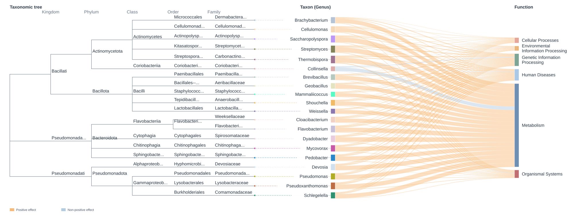
Follow a genus to the displayed functional categories. Ribbon width counts retained associations and the tree provides taxonomic context. The selected genus list defines this view; it is not an overview of every tested organism.
Open the interactive taxonomy Sankey.
Hover over a truncated label in the HTML view to read its full name. Hover over a taxon or function node to highlight its connected links and dim unrelated links.
Long labels are shortened in the static figure to avoid overlap.
Adjust sankey_options$tree_width to give the tree more
horizontal space and font_size or node_gap to
change label size or node spacing. The example uses
tree_options = sankey_options with
font_size = 18, node_gap = 12 and
tree_width = 1000. A wider tree leaves less room for the
Sankey connections at a fixed canvas width, so the example also sets
width = 2400. Increase the overall width
further when needed.
Compare the ASV phylogeny view
p_tax_phylogeny <- tax2fun_sankey(
result_taxa, tree_mode = "phylogeny", physeq = ps_taxa,
phylo_tree = phy_tree(ps_taxa), height = NULL, width = NULL,
tree_options = list(font_size = 12)
)
save_sankey(p_tax_phylogeny, file.path(out, "tax2fun_phylogeny.html"))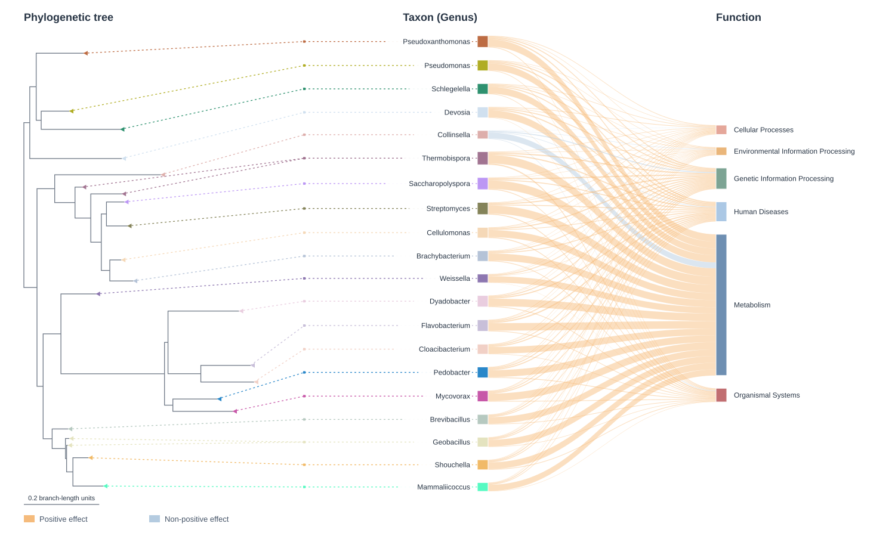
Open the interactive ASV phylogeny Sankey.
Hover over a truncated label in the HTML view to read its full name. Hover over a taxon or function node to highlight its connected links and dim unrelated links.
p_tax_plain <- tax2fun_sankey(result_taxa, tree_mode = "none")
save_sankey(p_tax_plain, file.path(out, "tax2fun_draggable.html"), selfcontained = FALSE)Drag nodes vertically to rearrange the view. Keep the adjacent
_files directory with exported HTML. The browser
arrangement does not change the fitted data or automatically persist
back to R. Open the
diagram.
2.2 Contribution-weighted Chord
p_tax_chord <- tax2fun_chord(
result_taxa, taxa_strat_path, ps_taxa, group = group_col,
contrast = c(reference, target), max_functions_per_taxon = 10, draw = FALSE
)
save_chord(p_tax_chord, file.path(out, "tax2fun_chord_top10.html"))
chord_taxa <- head(unique(p_tax_chord$links$taxon), 3L)
p_tax_chord_focus <- tax2fun_chord(
result_taxa, taxa_strat_path, ps_taxa, group = group_col,
contrast = c(reference, target), taxa_list = chord_taxa,
max_functions_per_taxon = 10, draw = FALSE
)
save_chord(p_tax_chord_focus, file.path(out, "tax2fun_chord_focus.pdf"))Ribbon width shows balanced mean predicted contribution, giving equal weight to the two group means. Colour describes effect direction; outer bars describe absolute model effect. The overview keeps up to ten functions per genus, ranked by contribution. Inspect HTML first, then choose genera for a focused PDF. Open the Chord and legends.
Read the taxon half from the outside toward the centre.
| Layer | Meaning |
|---|---|
| Outermost bars | Each bar represents the absolute model effect for one displayed genus–pathway association. Taller bars indicate larger absolute effects. |
| First classification ring | Phylum groups the selected genera by their broad lineage. |
| Second classification ring | Class shows the next level within those lineages. |
| Third classification ring | Order groups more closely related genera. |
| Fourth classification ring | Family provides the closest ancestral classification shown above Genus. |
| Innermost label ring | Individual genus names identify the endpoints of the ribbons. On the function half, this ring identifies pathways by name and ID. |
| Central ribbons | Each ribbon joins a genus to a retained pathway association. Its width represents predicted contribution averaged equally across the two group means. |
On the function half, coloured category blocks span the classification bands and group pathways by KEGG functional category. These blocks do not represent additional taxonomic ranks. Classification colours identify groups; ribbon and bar colours instead describe effect direction. In this STS-reference/LTS-target comparison, yellow/orange indicates a positive LTS-versus-STS effect and blue indicates a negative effect.
In the HTML view, search for a taxon or function in the legend and click its entry. An outline highlights the corresponding sector on its ring so you can locate it even in a crowded diagram. Click Clear selection to remove the highlight.
2.3 Contribution distributions within Cloacibacterium
result_taxa_box <- result_taxa[selected_taxon]
attr(result_taxa_box, "microfun") <- attr(result_taxa, "microfun")
tax_boxes <- tax2fun_box(taxa_strat_path, result_taxa_box, ps_taxa,
group = group_col, top_n = 5)
p_tax_box <- tax_boxes[[selected_taxon]]
ggplot2::ggsave(file.path(out, paste0("tax2fun_box_top5_", selected_taxon, ".pdf")),
p_tax_box, width = 10, height = 6)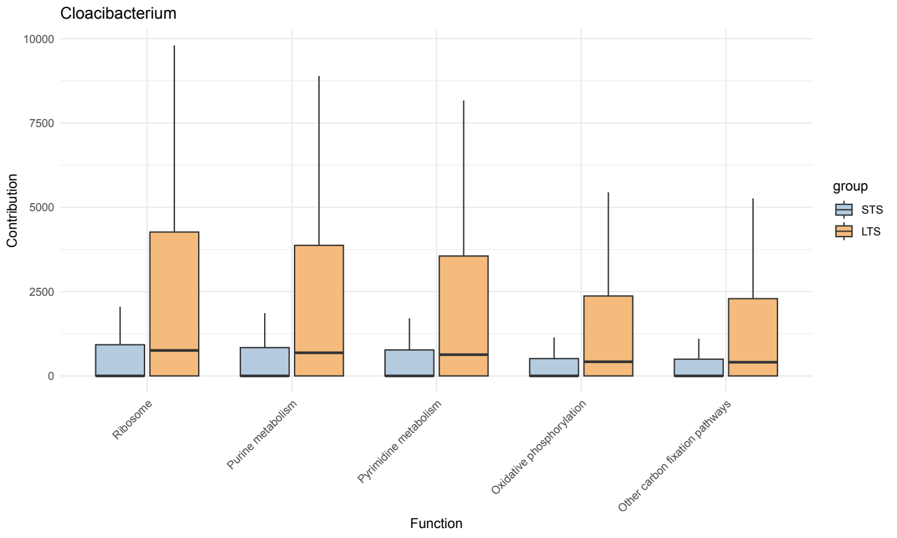
top_n = 5 selects pathways by the average of the group
mean contributions. It does not select the five smallest p-values.
Compare the distributions within each pathway and look for overlap as
well as differences in typical contribution.
2.4 Genus association dendrogram
p_tax_overview <- tax2fun_dendro(
result_taxa,
taxon_level = rank,
top_n_per_taxon = 5,
label_size = 2,
wrap_width = 36
)$plot +
ggplot2::labs(title = NULL) +
ggplot2::theme(plot.title = ggplot2::element_blank())
ggplot2::ggsave(
file.path(out, paste0("tax2fun_dendrogram_", tolower(rank), ".svg")),
p_tax_overview,
width = 14,
height = 13,
bg = "white"
)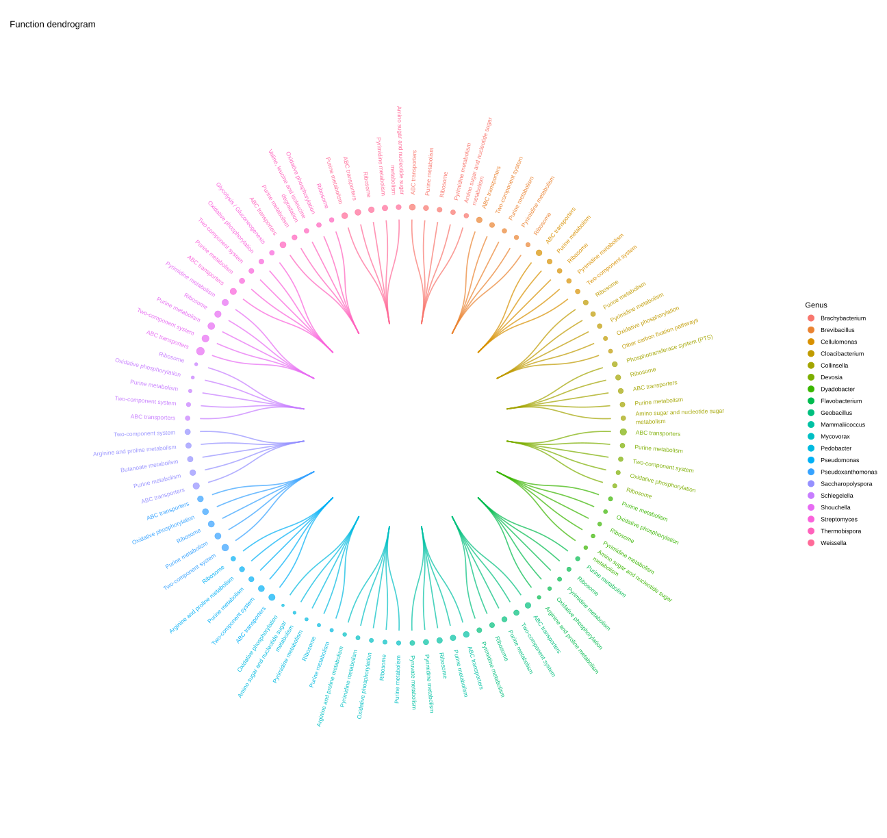
Branches organize genera and their retained pathways; point size represents absolute model effect. Up to five functions per genus are shown. This is an association summary rather than an evolutionary tree. Open the full-size diagram.

2.5 Signed effects within individual genera
tax_effects <- tax2fun_logfc(result_taxa, top_n = 10)
effect_genera <- intersect(c("Cloacibacterium", "Collinsella"), names(tax_effects))
for (taxon in effect_genera) {
ggplot2::ggsave(file.path(out, paste0("tax2fun_effect_top10_", taxon, ".pdf")),
tax_effects[[taxon]], width = 9, height = 6)
}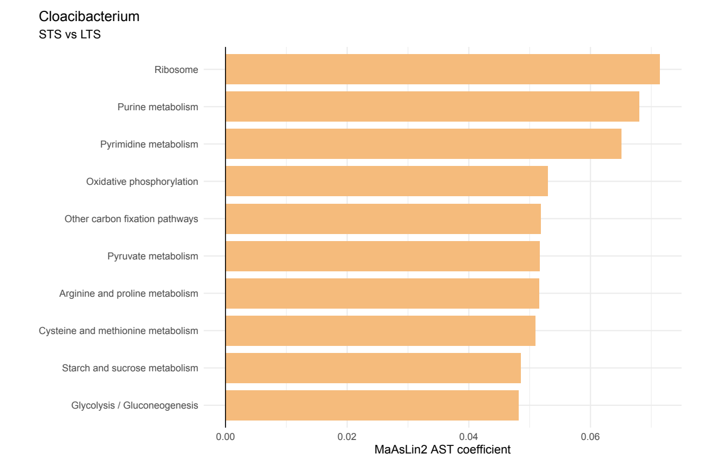
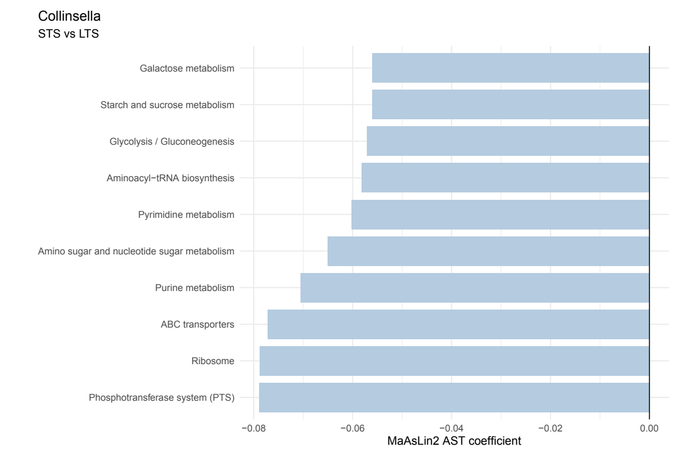
Read direction using STS as reference and LTS as target. Effect labels follow the fitted backend and MaAsLin2 transformation automatically. Compare the patterns between genera without treating their selected pathway sets as identical.
3. Function-centered analysis of selected KOs
This direction starts with the 23 project-related KOs in
keep_kos. It does not restrict contributors to
keep_genera. K00995, encoding a
phosphatidylglycerophosphate synthase, is used for the detailed
contribution and effect panels. The broader candidate set supports
project-driven exploration rather than a validated disease
signature.
Descriptive names in the supplied function-centered presentation were added by the authors. The analysis is keyed by KO ID, and ungrouped Sankey output displays KO IDs by default. Optional Chord display names are added explicitly below; they do not rename the fitted KO keys or constitute new biological evidence.
result_fun <- pathway_sdaa(
stratified_path = fun_strat_path, physeq = ps,
taxon_level = rank, group = group_col,
direction = "function", pathway = "KO", daa_method = chosen_method,
reference = reference, p.adjust.method = "BH", threshold = 0.05
)
# Restore original taxonomy labels if the modeling backend made them syntactic.
taxon_labels <- unique(taxonomy_rows[valid_taxon, rank])
model_labels <- make.names(taxon_labels)
stopifnot(!anyDuplicated(model_labels))
for (function_id in names(result_fun)) {
z <- result_fun[[function_id]]
ix <- match(z$feature, model_labels)
original <- z$feature %in% taxon_labels
stopifnot(all(original | !is.na(ix)))
z$feature[!original] <- taxon_labels[ix[!original]]
result_fun[[function_id]] <- z
}
saveRDS(result_fun, file.path(out, "sdaa_function.rds"))
available_functions <- names(result_fun)[vapply(result_fun, nrow, integer(1)) > 0L]
functions_of_interest <- intersect(keep_kos, available_functions)
result_fun_plot <- result_fun[functions_of_interest]
attr(result_fun_plot, "microfun") <- attr(result_fun, "microfun")
selected_function <- "K00995"
stopifnot(selected_function %in% functions_of_interest)Only KOs with retained results enter the plotted list. The full
filtered genus community remains eligible as contributors. To test a
different function set, edit keep_kos and regenerate its
contribution file before refitting. Fitting the entire 8,881-KO library
is a separate, longer option.
3.1 Sankey overviews of all retained contributors
p_fun_phylogeny <- fun2tax_sankey(
result_fun_plot, pathway = "KO", group_functions = FALSE,
tree_mode = "phylogeny", physeq = ps, phylo_tree = phy_tree(ps),
height = NULL, width = NULL, tree_options = list(font_size = 12)
)
save_sankey(p_fun_phylogeny, file.path(out, "fun2tax_phylogeny.html"))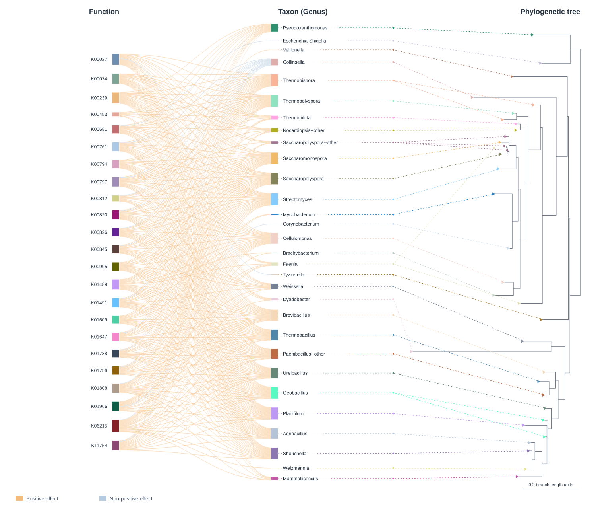
Follow a KO to its significant contributors. These diagrams use the updated filtered data and keep genera outside the taxon-centered project list. The identifiers are KOs; any added descriptive labels are presentation annotations.
Open the interactive function-to-taxon phylogeny Sankey.
Hover over a truncated label in the HTML view to read its full name. Hover over a taxon or function node to highlight its connected links and dim unrelated links.
Compare the taxonomy view
p_fun_taxonomy <- fun2tax_sankey(
result_fun_plot, pathway = "KO", group_functions = FALSE,
tree_mode = "taxonomy", physeq = ps,
height = NULL, width = NULL, tree_options = list(font_size = 12)
)
save_sankey(p_fun_taxonomy, file.path(out, "fun2tax_taxonomy.html"))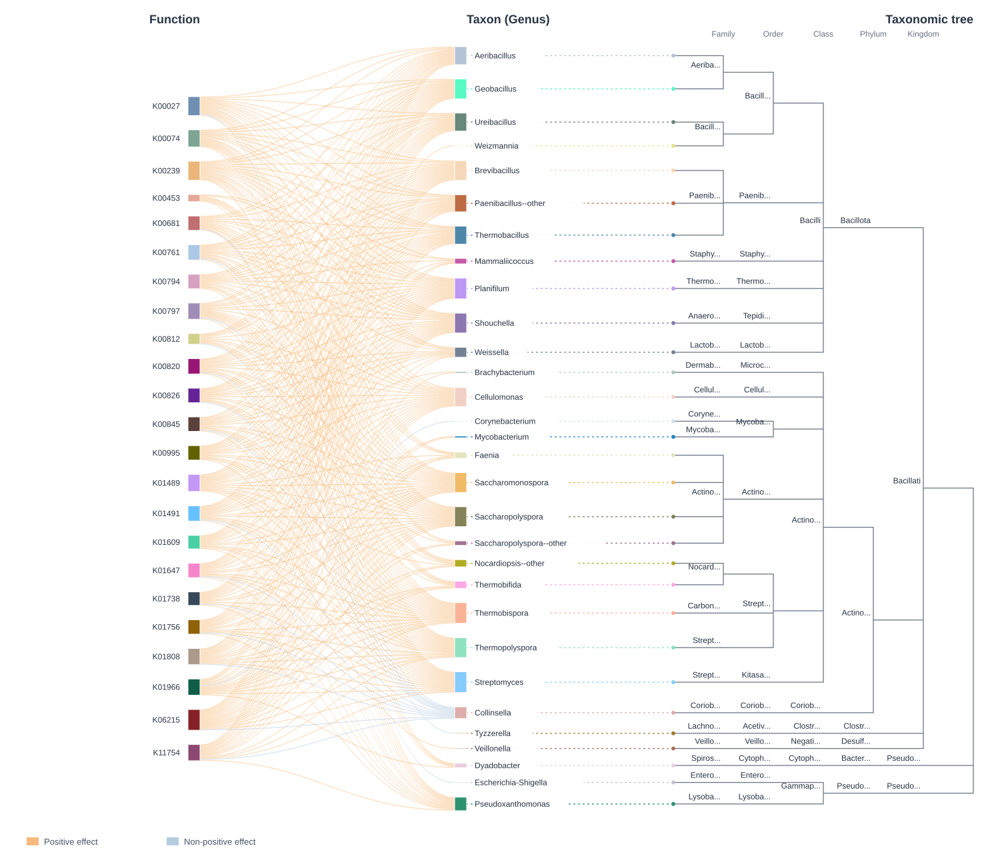
Open the interactive function-to-taxon taxonomy Sankey.
Hover over a truncated label in the HTML view to read its full name. Hover over a taxon or function node to highlight its connected links and dim unrelated links.
p_fun_plain <- fun2tax_sankey(result_fun_plot, pathway = "KO", group_functions = FALSE,
tree_mode = "none", height = NULL, width = NULL)
save_sankey(p_fun_plain, file.path(out, "fun2tax_draggable.html"), selfcontained = FALSE)Drag nodes to explore the selected KOs and contributors. Open the diagram.
3.2 Contribution-weighted Chord for the selected KOs
p_fun_chord <- fun2tax_chord(
result_fun_plot, fun_strat_path, ps, group = group_col,
contrast = c(reference, target), functions = functions_of_interest,
max_taxa_per_function = 10, draw = FALSE
)
# Optional author-supplied names for presentation, leaving KO IDs unchanged.
ko_display_labels <- read.csv(file.path(data_dir, "KO_display_labels.csv"),
stringsAsFactors = FALSE)
function_table <- p_fun_chord$function_table
function_table$function_name <- ko_display_labels$function_name[
match(function_table$function_id, ko_display_labels$function_id)
]
p_fun_chord_named <- fun2tax_chord(
result_fun_plot, fun_strat_path, ps, group = group_col,
contrast = c(reference, target), functions = functions_of_interest,
max_taxa_per_function = 10, function_table = function_table, draw = FALSE
)
save_chord(p_fun_chord_named, file.path(out, "fun2tax_chord_top10.html"))
p_fun_chord_focus <- fun2tax_chord(
result_fun_plot, fun_strat_path, ps, group = group_col,
contrast = c(reference, target), functions = selected_function,
max_taxa_per_function = 5, draw = FALSE
)
save_chord(p_fun_chord_focus, file.path(out, "fun2tax_chord_focus.pdf"))The overview retains up to ten contributors per KO, ranked by contribution, without using the project genus list. Width shows balanced mean predicted contribution; colour and the outer bar describe model effect. Inspect HTML before exporting a focused PDF. Open the Chord and legends.
In the HTML view, search for a taxon or function in the legend and click its entry. An outline highlights the corresponding sector on its ring so you can locate it even in a crowded diagram. Click Clear selection to remove the highlight.
3.3 Detailed contributions to K00995
result_fun_box <- result_fun_plot[selected_function]
attr(result_fun_box, "microfun") <- attr(result_fun_plot, "microfun")
fun_boxes <- fun2tax_box(fun_strat_path, result_fun_box, ps, group = group_col,
pathway = "KO", group_functions = FALSE, top_n = 5)
p_fun_box <- fun_boxes[[selected_function]]
ggplot2::ggsave(file.path(out, paste0(selected_function, "_boxplot_top5.pdf")),
p_fun_box, width = 10, height = 6)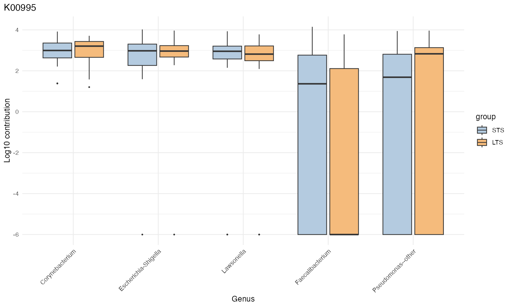
top_n = 5 ranks genera by the average of their group
mean contributions. The plot shows
log10(contribution + 1e-6). Corynebacterium,
Escherichia-Shigella and Lawsonella have comparatively steady
contributions across many samples, while Faecalibacterium and
Pseudomonas–other vary more widely and include zero-contribution
samples. Those zeros appear at the lower plotting limit after adding the
small offset. Contributors outside the project genus list remain
eligible; Incertae sedis is absent from the filtered inputs.
3.4 Association dendrogram for the selected KOs
p_fun_dendro <- fun2tax_dendro(
result_fun_plot,
top_n_per_function = 10,
label_size = 2.6,
wrap_width = 20
)$plot +
ggplot2::labs(title = NULL) +
ggplot2::theme(plot.title = ggplot2::element_blank())
p_fun_dendro <- p_fun_dendro + ggplot2::coord_fixed(
xlim = c(-1.6, 1.6),
ylim = c(-1.6, 1.6),
clip = "off"
)
ggplot2::ggsave(
file.path(out, "fun2tax_dendrogram_top10.pdf"),
p_fun_dendro,
width = 10,
height = 8
)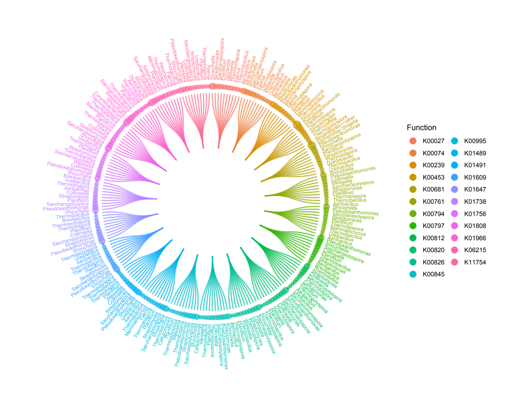
Branches organize the selected KO–genus relationships. Point size represents absolute model effect. All displayed associations use the filtered input data. Open the full-size PDF.
3.5 Signed effects for K00995
fun_effects <- fun2tax_logfc(result_fun_plot, top_n = 10)
p_fun_effect <- fun_effects[[selected_function]]
ggplot2::ggsave(file.path(out, paste0(selected_function, "_signed_effects_top10.pdf")),
p_fun_effect, width = 9, height = 6)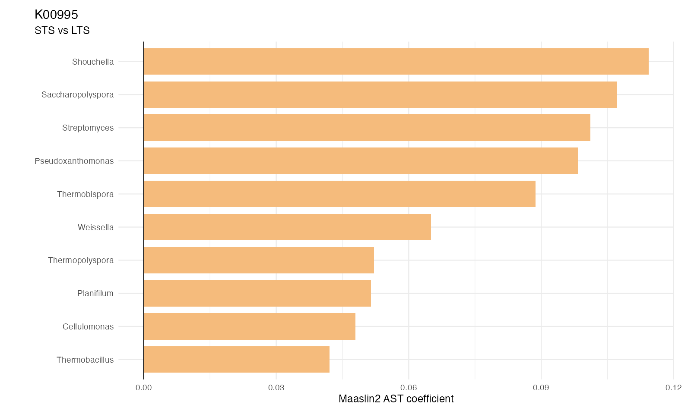
Read direction using STS as reference and LTS as target. The effect label records the fitted transformation. Use these associations to guide follow-up questions rather than interpreting a predicted KO as direct expression or disease causation.